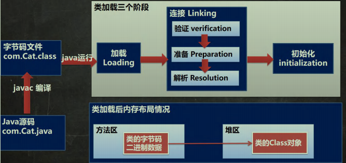
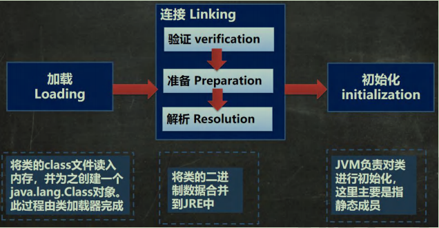
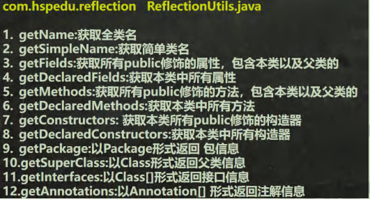

反射复习
反射复习
能干嘛
当我们创建一个对象时，需要事先在源码中进行编写，例如：new Object(),但如果未来发生变化，我就不得不在源码中进行修改，这也违反了开闭原则，我们能不能仅修改配置文件就可以调整系统中需要创建的类。比如说我在配置文件写:
classPathName=org.Mysql.SQLBuilder
mathod=getSqlSession 我想未来我的系统可以读取该配置文件，知道需要的是一个org.Mysql.SQLBuilder类，并且调用getSqlSession方法。等到未来如果修改成：
classPathName=org.Oracle.SQLBuilder
mathod=getSqlSessions 那系统也能动态的感知到现在需要的是org.Oracle.SQLBuilder,并要调用getSqlSessions方法。在使用反射前我们是无法解决的，因为所有使用的类，在编译期就固定了。所以引出了反射技术。也就是为了在运行期，可动态获取类信息或者创建对象。
这在我们学习框架例如Spring，Mybatis时就经常使用，比如我想动态的获取@Table(name="my_db")注解内的内容，就可以通过反射来进行获取。
具体功能：
在运行时判断任意一个对象所属的类 （
在运行时构造任意一个类对象
在运行时得到任意一个类所具有的的成员方法和方法
在运行时调用任意一个对象的成员变量和方法
生成动态代理
是什么
反射机制允许程序在执行期间借助Reflection API，获取任何类的内部信息（比如：成员变量，构造器，成员方法等），并能操作属性和方法。
当JVM加载完类后，会在堆中产生一个Class类型的对象（一个类只有一个Class对象），这个类对象包含了类的完整结构信息。
Java反射机制原理图

类加载过程


简单来说就是我们写成的源码，在被JVM加载后，会对每个类生成唯一的Class对象，每当我们实例化一个对象时，这个对象的对象头都有一个指针指向对象所属的唯一的Class对象。
当我们获取到Class对象时，我们可以知道Class成员变量，方法，构造器，并进行任意的使用。
其中最主要的几个类：
- Java.lang.Class 表示一个类
- Java.lang.reflect.Method 表示方法
- Java.lang.reflect.Field 表示成员变量
- Java.lang.reflect.Constructor 表示构造器
其中Method，Field，Constructor都有getModifiers()以int形式返回修饰符(private，protect，public)
0: 默认
1: public
2: private
4: protected
8: static
16: fianl public(1) + static(8) = 9 这样就可以判断出一些信息。
怎么用
@Test
public void test3() {
// 找到String的类对象
Class<String> aClass = String.class;
// 获取字段 public
Field[] fields = aClass.getFields();
// 获取方法 public
Method[] methods = aClass.getMethods();
// 获取构造器 public
Constructor<?>[] constructors = aClass.getConstructors();
// 所有修饰符的都可以获取到
aClass.getDeclaredFields();
aClass.getDeclaredMethods();
aClass.getDeclaredConstructors();
}反射的优缺点：
- 优点：可以动态创建和使用对象
- 缺点：反射基本是解释执行，对执行速度有影响
我们可代码验证
public class demo {
@Test
public void test1() throws NoSuchMethodException, InstantiationException, IllegalAccessException, InvocationTargetException {
int time = 10000000;
// 正常方式：
Cat cat = new Cat();
long start = System.currentTimeMillis();
for (int i = 0; i < time; i++) {
cat.hi();
}
long end = System.currentTimeMillis();
System.out.println("正常调用："+ (end - start));
// 反射方式：
Class<? extends Cat> aClass = cat.getClass();
Cat cat1 = aClass.newInstance();
Method hi = aClass.getMethod("hi");
start = System.currentTimeMillis();
for (int i = 0; i < time; i++) {
hi.invoke(cat1);
}
end = System.currentTimeMillis();
System.out.println("反射调用："+ (end - start));
// 结果：
// 正常调用：9
// 反射调用：84
}
}
class Cat {
public void hi() {}
} Method和Field和Constructor对象都有setAccessible()方法,setAccessible作用是启动和禁止访问安全检查的开关。当setAccessible(true)表示反射的对象在使用时取消访问检查，提高反射的效率，为false则表示执行访问检查。当我们修改上述代码：hi.setAccessible(true);，最终执行速度可以快一倍左右。
并且当我们访问private修饰的变量，方法，构造器时，如果不设置setAccessible()会爆出：java.lang.IllegalAccessException; 如果设置则可正常访问。
Class类

- Class也是类，继承Object。
- Class类不是new出来的，而是系统创建的
- 某个类的Class类对象，在内存只有一份，因为类只加载一次 （如果多线程同时进行同一个类加载，会导致阻塞）
- 每个类的实例都知道自己是哪个Class实例的
- 通过Class对象可以完整的获取一个类的完整结构
- Class对线是存放在堆的
- 类的字节码二进制数据，是放在方法区的，也称为元数据。
Class类的常用方法：

如何获取Class类
- 已经知道全类名：
Class.forName("className"),常用语配置文件读取，加载类 - 已经知道具体的类：
Class clas = Cat.class,性能最好，一般用在参数传递 - 已经知道类的实例：
Class clas = cat.getClass() - 包装类型：
Class i = Inteager().Type - 基本数据类型：int.class
哪些类型有Class对象
1. 类
2. 接口
3. 数组
4. 枚举
5. 注解
6. 基本数据类型
7. void最终测试
测试1：
定义PrivateTest类，私有属性name，属性值为hellokitty
- 提供getName的公有方法
- 利用Class类获取私有的name属性，修改属性值，并调用getName方法，打印name属性
public class demo {
@Test
public void test1() throws NoSuchFieldException, InstantiationException, IllegalAccessException, NoSuchMethodException, InvocationTargetException {
Class<PrivateTest> aClass = PrivateTest.class;
PrivateTest instance = aClass.newInstance();
Field name = aClass.getDeclaredField("name");
name.setAccessible(true);
name.set(instance,"wangCai");
Method getName = aClass.getMethod("getName");
System.out.println(getName.invoke(instance));
}
}
class PrivateTest {
private String name = "hellokitty";
public String getName() {
return name;
}
}测试2：
- 反射获取File类的Class对象
- 在控制台打印File类的所有构造器
- 通过newInstance创建File对象，并创建一个本地文件
public class demo {
@Test
public void test1() throws NoSuchFieldException, InstantiationException, IllegalAccessException, NoSuchMethodException, InvocationTargetException, ClassNotFoundException, IOException {
Class<?> aClass = Class.forName("java.io.File");
Constructor<?>[] constructors = aClass.getDeclaredConstructors();
System.out.println(Arrays.toString(constructors));
Constructor<?> constructor = aClass.getConstructor(String.class);
File file = (File) constructor.newInstance("doc.txt");
file.createNewFile();
}
}